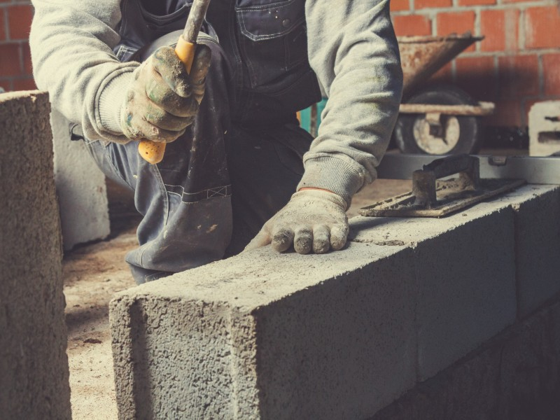

L'attaquant de 30 ans nous a accordé son temps pour répondre à nos questions
Un parcours atypique
Footballeur professionel comptant plus de 100 matchs en National, Ottman Dadoune se destinait pourtant à un tout autre parcours...

Image d'illustration ; crédit photo MCCO
Un mental à toutes épreuves
Le joueur passé par Chambly, Villefranche, QRM ou encore Le Puy est passé durant sa carrière par toutes les émotions.